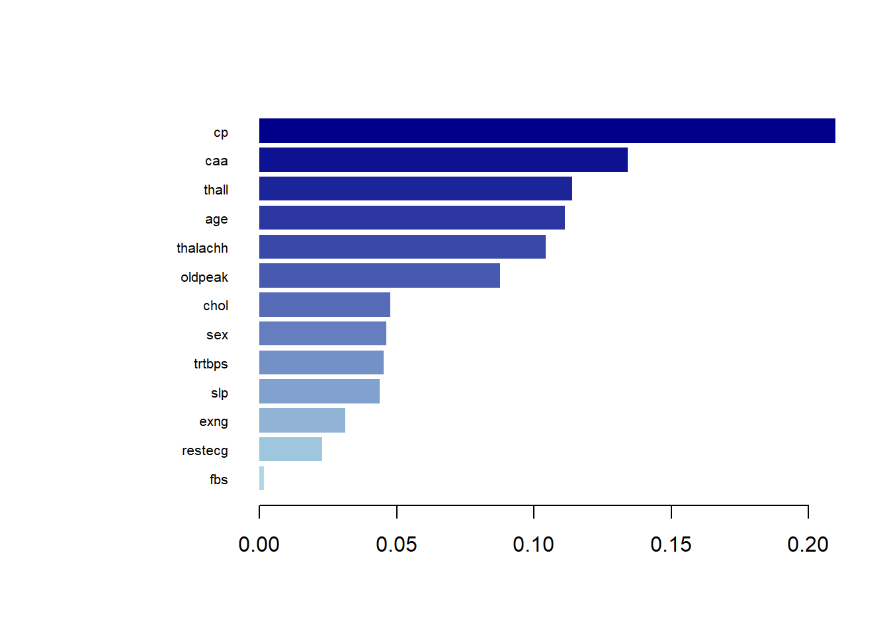
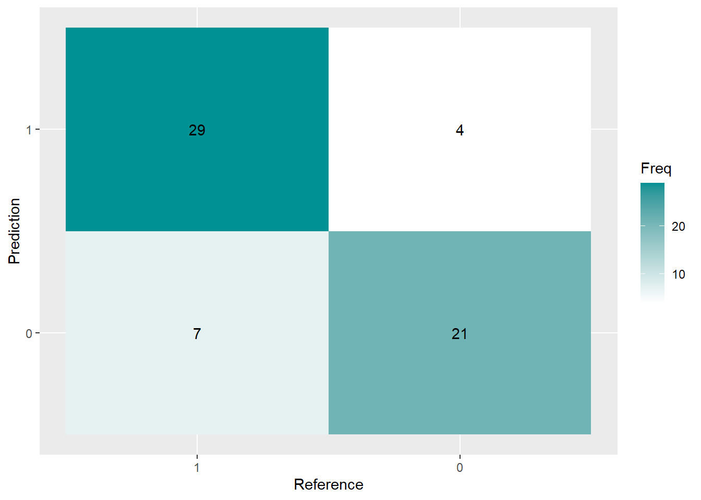
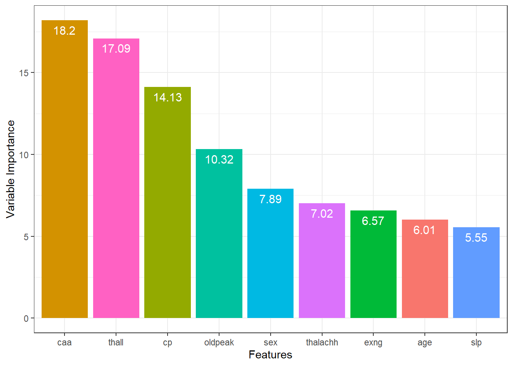
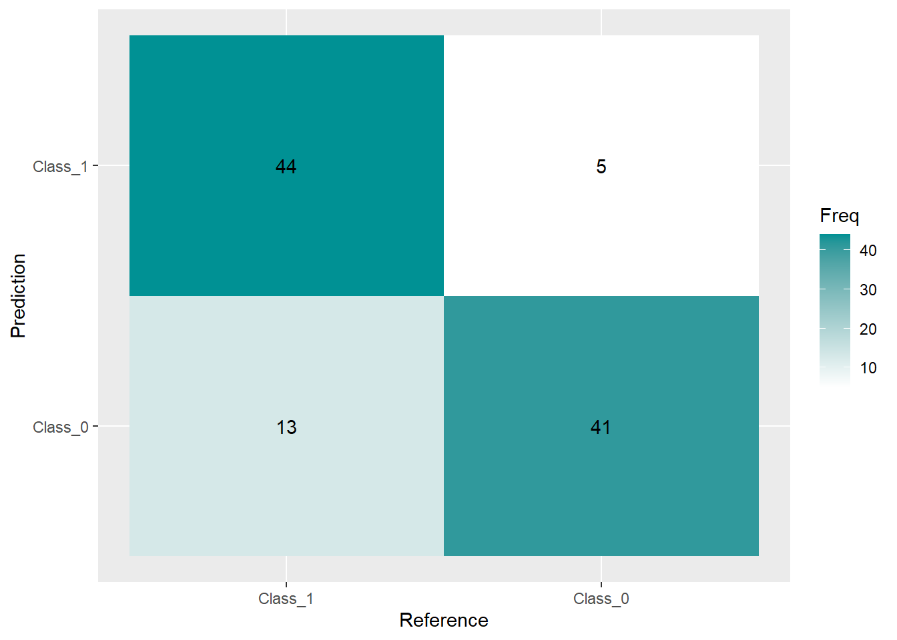

#Load neccessary libraries and the dataset
library(xgboost)
library(rsample)
library(caret)
library(dplyr)
library(ggplot2)
library(tidyr)
library(tidyverse)
library(caTools)
setwd("C:/Users/molat/OneDrive/Documents/GitHub/vignette-binary-logistic-regression")
load("data/heart.rda")Vignette: Heart Attack Prediction
Predictive Modeling for Heart Disease
The research aims to develop accurate and efficient models to aid in early detection and intervention strategies for improved patient outcomes.
The predictive models, XGBoost and Support Vector Machine (SVM), were selected for their capabilities in handling complex dataset and their potential in accurately identifying heart disease.
XGBoost Model
heart$cp <- as.factor(heart$cp)
heart$fbs <- as.factor(heart$fbs)
heart$restecg <- as.factor(heart$restecg)
heart$exng <- as.factor(heart$exng)
heart$caa <- as.factor(heart$caa)
heart$thall <- as.factor(heart$thall)
heart$sex <- as.factor(heart$sex)
heart$slp <- as.factor(heart$slp)XGBoost require numerical input for modeling. Converting categorical variables to factors ensures that these variables are encoded as numerical values that the algorithm can process.
Splitting the Data into Training and Testing Sets:
set.seed(3435)
heart_split <- initial_split(heart, strata = output, prop = 0.8)
heart_train <- training(heart_split)
heart_test <- testing(heart_split)
train_x <- data.matrix(heart_train[, -14])
train_y <- heart_train[,14]
test_x = data.matrix(heart_test[, -14])
test_y = heart_test[, 14]Using initial_split() from the rsample package to divide the dataset into training (80%) and testing (20%) sets. This ensures a balanced distribution of classes (stratified by the output variable). Partition of the data is performed randomly, so for reproduction purposes, we need to set seed for this process where set.seed() needs to be executed with the splitting code at the same time.
We also separate the labels and the features to be used in the prediction task in a later stage.
Converting Train and Test into xgb.DMatrix Format:
xgb_train = xgb.DMatrix(data = train_x, label = train_y)
xgb_test = xgb.DMatrix(data = test_x, label = test_y)XGBoost package allows us to group the data into a Dmatrix which can be directly inputted into the training process.
Using Cross-Validation to Find Optimal Number of Iterations:
param_list = list(
booster = 'gbtree',
objective = "binary:logistic",
eta = 0.01,
gamma = 1,
max_depth = 6,
subsample = 0.8,
colsample_bytree = 0.5
)
xgbcv = xgb.cv(params = param_list,
data = xgb_train,
nrounds = 500,
nfold = 5,
print_every_n = 10,
early_stopping_rounds = 30,
maximize = F)[1] train-logloss:0.688564+0.000426 test-logloss:0.689515+0.000561
Multiple eval metrics are present. Will use test_logloss for early stopping.
Will train until test_logloss hasn't improved in 30 rounds.
[11] train-logloss:0.648138+0.001078 test-logloss:0.658526+0.004514
[21] train-logloss:0.610766+0.002526 test-logloss:0.631012+0.006679
[31] train-logloss:0.578854+0.003268 test-logloss:0.606494+0.009006
[41] train-logloss:0.549389+0.003430 test-logloss:0.586075+0.012526
[51] train-logloss:0.522625+0.004828 test-logloss:0.567163+0.013922
[61] train-logloss:0.498105+0.005012 test-logloss:0.549929+0.016585
[71] train-logloss:0.476419+0.005898 test-logloss:0.535235+0.018305
[81] train-logloss:0.456599+0.006501 test-logloss:0.523482+0.021385
[91] train-logloss:0.438357+0.007138 test-logloss:0.512039+0.023235
[101] train-logloss:0.421719+0.007344 test-logloss:0.502315+0.025389
[111] train-logloss:0.406298+0.007288 test-logloss:0.491765+0.027420
[121] train-logloss:0.391657+0.007397 test-logloss:0.482773+0.029852
[131] train-logloss:0.378376+0.007311 test-logloss:0.474975+0.032544
[141] train-logloss:0.365791+0.007221 test-logloss:0.467746+0.034402
[151] train-logloss:0.354776+0.007276 test-logloss:0.461383+0.035851
[161] train-logloss:0.344038+0.007812 test-logloss:0.456333+0.036779
[171] train-logloss:0.333738+0.008243 test-logloss:0.450981+0.037934
[181] train-logloss:0.324473+0.008308 test-logloss:0.446279+0.039781
[191] train-logloss:0.315785+0.008455 test-logloss:0.441533+0.041116
[201] train-logloss:0.307572+0.008816 test-logloss:0.438042+0.041893
[211] train-logloss:0.300071+0.008539 test-logloss:0.434093+0.042469
[221] train-logloss:0.292937+0.008815 test-logloss:0.430843+0.043856
[231] train-logloss:0.286446+0.008670 test-logloss:0.426982+0.045112
[241] train-logloss:0.280190+0.008491 test-logloss:0.424449+0.046175
[251] train-logloss:0.274173+0.008745 test-logloss:0.422769+0.047761
[261] train-logloss:0.268692+0.008867 test-logloss:0.422121+0.049315
[271] train-logloss:0.263047+0.008900 test-logloss:0.420513+0.050418
[281] train-logloss:0.257830+0.009068 test-logloss:0.418697+0.051613
[291] train-logloss:0.252876+0.009051 test-logloss:0.417511+0.052773
[301] train-logloss:0.248177+0.009133 test-logloss:0.416981+0.054025
[311] train-logloss:0.243779+0.009136 test-logloss:0.416120+0.054782
[321] train-logloss:0.239715+0.009434 test-logloss:0.414492+0.055642
[331] train-logloss:0.236096+0.009485 test-logloss:0.414123+0.056500
[341] train-logloss:0.232629+0.009694 test-logloss:0.413265+0.057653
[351] train-logloss:0.229003+0.010415 test-logloss:0.413096+0.058524
[361] train-logloss:0.225511+0.010329 test-logloss:0.412857+0.059878
[371] train-logloss:0.222205+0.010346 test-logloss:0.413070+0.060805
[381] train-logloss:0.219459+0.010446 test-logloss:0.413479+0.062556
Stopping. Best iteration:
[354] train-logloss:0.227869+0.010424 test-logloss:0.412709+0.058639The function sgb.cv can take in various parameters, which is explained in the following section:
•booster: It specifies the type of booster to use. ‘gbtree’ indicates that the booster is a tree-based model using gradient boosting.
•objective: ‘binary:logistic’ implies the selected type of loss function for binary classification, which minimizes the logistic loss for binary outcomes.
•eta: It controls the step size shrinkage used in updating weights during the boosting process.
•gamma: It represents the minimum loss reduction required to make a further partition on a leaf node of the tree. A higher gamma value leads to a more conservative model by preventing overfitting.
•max_depth: This parameter determines the maximum depth of each tree in the boosting process. Higher values allow the model to capture more complex relationships but may lead to overfitting if not controlled properly.
•subsample: It defines the fraction of samples to be used for training each tree.
•colsample_bytree: This parameter denotes the fraction of features (columns) to be randomly sampled for each tree. A value of 0.5 implies that only 50% of the features will be considered for splitting at each node.
Using xgb.cv() to perform k-fold cross-validation (nfold = 5) on the training data (xgb_train) to determine the optimal number of boosting rounds (nrounds) while avoiding overfitting. Early stopping is implemented (early_stopping_rounds) to halt training if no improvement occurs (when the train loss and test loss does not have significant decrease).
The best iteration is 452 in this case.
Using the Best Iteration Round to Perform Model Training:
set.seed(3435)
final.m = xgb.train(params = param_list, data = xgb_train, nrounds = 425, verbose = 0)
var_imp = xgb.importance(
feature_names = setdiff(names(train),
c("output")),
model = final.m)
blue_palette <- colorRampPalette(c("lightblue", "darkblue"))(length(heart) -1)
xgb.plot.importance(var_imp, col = blue_palette)
After training XGBoost model at nrounds = 425, we calculate the importance score for each features and plot it. In XGBoost models, feature importance scores indicate the relative importance of each input feature (or predictor variable) in contributing to the model’s predictive performance. From the importance plot we can see that “cp” which stands for the chest pain type receives the highest importance score.
Prediction and Visualization:
set.seed(3435)
predictions <- predict(final.m, newdata = test_x)
predictions <- as.numeric(predictions > 0.5)
conf_matrix <- confusionMatrix(as.factor(predictions), as.factor(test_y))
conf_matrixConfusion Matrix and Statistics
Reference
Prediction 0 1
0 21 4
1 7 29
Accuracy : 0.82
95% CI : (0.7, 0.906)
No Information Rate : 0.541
P-Value [Acc > NIR] : 4.82e-06
Kappa : 0.634
Mcnemar's Test P-Value : 0.546
Sensitivity : 0.750
Specificity : 0.879
Pos Pred Value : 0.840
Neg Pred Value : 0.806
Prevalence : 0.459
Detection Rate : 0.344
Detection Prevalence : 0.410
Balanced Accuracy : 0.814
'Positive' Class : 0
testframe <- as.data.frame(conf_matrix$table)
testframe$Prediction <- factor(testframe$Prediction, levels=rev(levels(testframe$Prediction)))Make predictions on the test data. The threshold of 0.5 is applied to convert probabilities to binary predictions, and the model generates a confusion matrix using the predicted values and actual test labels. A confusion matrix allows us to see how many predictions the models make correct or wrong. The function confusionMatrix() also gives us the ensitivity and Specificity automatically. Then, convert the confusion matrix to a data frame for visualizations and rearrange the levels of the Prediction variable to ensure correct plotting order.
In this case, the model accuracy is 0.82.
ggplot(testframe, aes(Prediction,Reference, fill= Freq)) +
geom_tile() + geom_text(aes(label=Freq)) +
scale_fill_gradient(low="white", high="#009194") +
labs(x = "Reference",y = "Prediction")
Finally, plot the confusion matrix to display the frequency of correct and incorrect predictions with gradient colors representing frequency levels.
Support Vector Machine (SVM) Model
Classify the variables into categorical and numerical variables again:
numeric_var <-heart %>%
select("age","trtbps","chol","thalachh","oldpeak")
categorical_var<- heart %>%
select("sex","cp","fbs","restecg","exng","slp","caa",
"thall","output")%>%
mutate_if(is.numeric, as.factor)
dataset1 = cbind(categorical_var,numeric_var)Give a preview of dataset1:
head(dataset1) sex cp fbs restecg exng slp caa thall output age trtbps chol thalachh oldpeak
1 1 3 1 0 0 0 0 1 1 63 145 233 150 2.3
2 1 2 0 1 0 0 0 2 1 37 130 250 187 3.5
3 0 1 0 0 0 2 0 2 1 41 130 204 172 1.4
4 1 1 0 1 0 2 0 2 1 56 120 236 178 0.8
5 0 0 0 1 1 2 0 2 1 57 120 354 163 0.6
6 1 0 0 1 0 1 0 1 1 57 140 192 148 0.4Here, we define the outliers as \([Q1 - 1.5IQR, Q3 +1.5IQR]\), and we want to exclude some leverage points from certain variables so that our feature selection process will be less likely interfered by extreme values. For practive, we can summarize the data and explore the variables that have abnormal values. For our demonstration, we choose “trtbps”,“oldpeak” ,“thalachh”, and “chol”.
We then remove outliers from dataset1 based on the IQR method and save it in dataset2.
outliers <- function(x) {
Q1 <- quantile(x, probs=.25)
Q3 <- quantile(x, probs=.75)
iqr = Q3-Q1
upper_limit = Q3 + (iqr*1.5)
lower_limit = Q1 - (iqr*1.5)
x > upper_limit | x < lower_limit
}
remove_outliers <- function(df_outliers, cols = names(df_outliers)) {
for (col in cols) {
df_outliers<- df_outliers[!outliers(df_outliers[[col]]),]
}
df_outliers
}
dataset2<-remove_outliers(dataset1,c("trtbps","oldpeak" ,"thalachh", "chol"))Feature Selection:
set.seed(100)
subsets <- c(1:8,10,13)
# define the control using random forest selection
ctrl <- rfeControl(functions = rfFuncs,
method = "repeatedcv",
repeats = 5,
number = 10,
verbose = FALSE)
#run the RFE
results <- rfe(x=dataset2[, c(1:8,10:14)], y=dataset2$output,
sizes = subsets,
rfeControl = ctrl)
print(predictors(results))[1] "caa" "thall" "cp" "oldpeak" "sex" "thalachh" "exng"
[8] "age" We utilize Recursive Feature Elimination with cross-validation to determine the most important subset of features from dataset2 that best predict the output variable (output). The printed output reveals the selected features deemed most significant by the RFE process for subsequent modeling.
set.seed(100)
varimp_data <- data.frame(feature = row.names(varImp(results))[1:9],
importance = varImp(results)[1:9, 1])
ggplot(data = varimp_data,
aes(x = reorder(feature, -importance), y = importance, fill = feature)) +
geom_bar(stat="identity") + labs(x = "Features", y = "Variable Importance") +
geom_text(aes(label = round(importance, 2)), vjust=1.6, color="white", size=4) +
theme_bw() + theme(legend.position = "none")
The bar plot visually represents the importance of the top 9 features in descending order, where the length of each bar indicates the respective importance score. Higher bars denote features with greater importance in the predictive model. This helps understand the relative significance of different features in predicting the target variable.
Spliting the Data:
We split the data to training and testing part with a proportion of 7:3.
set.seed(100)
data1 <- dataset2 %>%
select(predictors(results), "output")
intrain <- createDataPartition(y = data1$output, p= 0.7, list = FALSE)
training <- heart[intrain,]
testing <- heart[-intrain,]
training[["output"]] = factor(training[["output"]])Model Construction:
set.seed(100)
trctrl <- trainControl(method = "repeatedcv", number = 10, repeats = 3)
svm_Linear <- train(output ~., data = training, method = "svmLinear",
trControl=trctrl,
preProcess = c("center", "scale"),
tuneLength = 10)
svm_LinearSupport Vector Machines with Linear Kernel
200 samples
13 predictor
2 classes: '0', '1'
Pre-processing: centered (22), scaled (22)
Resampling: Cross-Validated (10 fold, repeated 3 times)
Summary of sample sizes: 179, 181, 180, 180, 181, 180, ...
Resampling results:
Accuracy Kappa
0.8492 0.687
Tuning parameter 'C' was held constant at a value of 1Construct an SVM model with a linear kernel using repeated cross-validation (repeatedcv) for robust evaluation. It preprocesses the data by centering and scaling the predictor variables and evaluates the model’s performance based on the specified control parameters. The resulting svm_Linear object contains information about the trained SVM model, which can be further examined to assess model performance and obtain predictions on new data.
In this case, the model accuracy is 0.8492.
Make prediction:
set.seed(100)
test_pred <- predict(svm_Linear, newdata = testing)
test_pred [1] 1 1 1 1 1 1 1 1 1 1 1 1 1 0 1 1 1 1 1 1 1 1 1 1 0 1 1 1 1 1 1 0 1 1 1 1 1
[38] 1 1 0 0 1 1 1 1 1 1 1 1 0 0 0 1 0 1 0 0 0 1 0 0 1 0 0 0 0 0 0 0 1 0 1 0 1
[75] 0 0 0 0 0 0 0 0 0 0 0 0 1 0 0 0 0 0 0 1 1 0 1 0 0 1 0 0 1
Levels: 0 1cm = caret::confusionMatrix(table(test_pred, testing$output))
cm$table
test_pred 0 1
0 41 5
1 13 44cm <- confusionMatrix(table(test_pred, testing$output))
plt <- as.data.frame(cm$table)
plt$Prediction <- factor(plt$test_pred, levels=rev(levels(plt$test_pred)))Apply the trained SVM model on the testing dataset and create a confusion matrix to evaluate the model’s predictive performance by comparing predicted values to actual values. The confusion matrix provides insights into the model’s accuracy, precision, recall, and other classification metrics.
Confusion Matrix Visualization
ggplot(plt, aes(Prediction,Var2, fill= Freq)) +
geom_tile() + geom_text(aes(label=Freq)) +
scale_fill_gradient(low="white", high="#009194") +
labs(x = "Reference",y = "Prediction") +
scale_x_discrete(labels=c("Class_1","Class_0")) +
scale_y_discrete(labels=c("Class_0","Class_1"))
Finally, plot the confusion matrix to display the frequency of correct and incorrect predictions with gradient colors representing frequency levels.